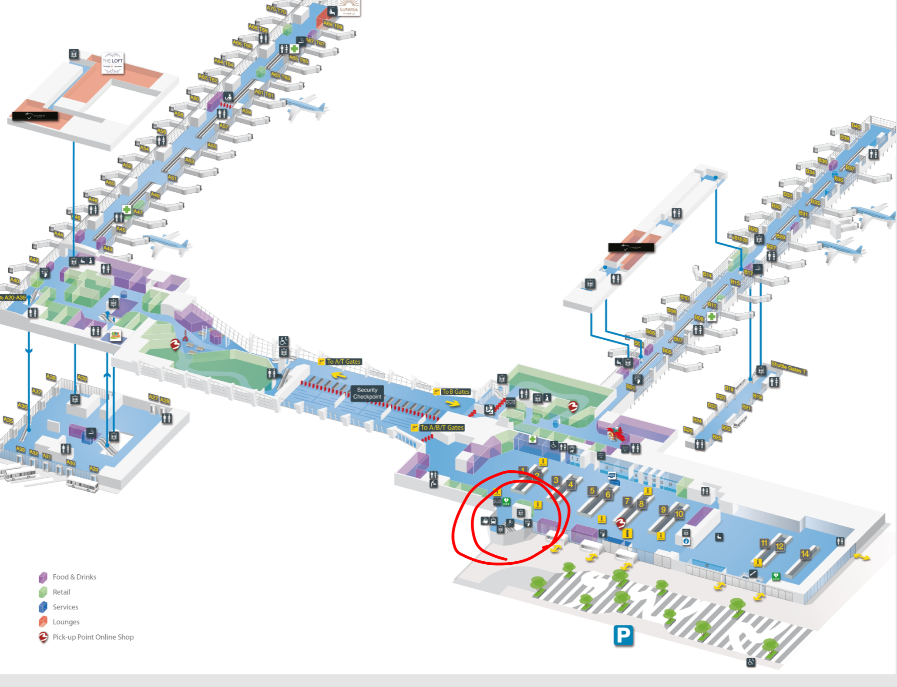
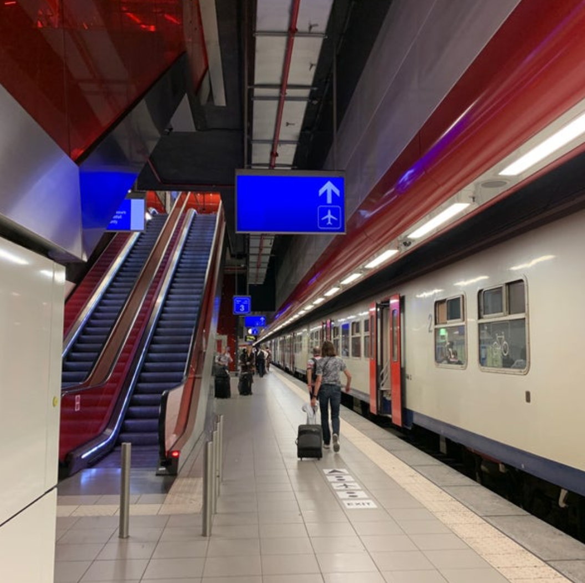
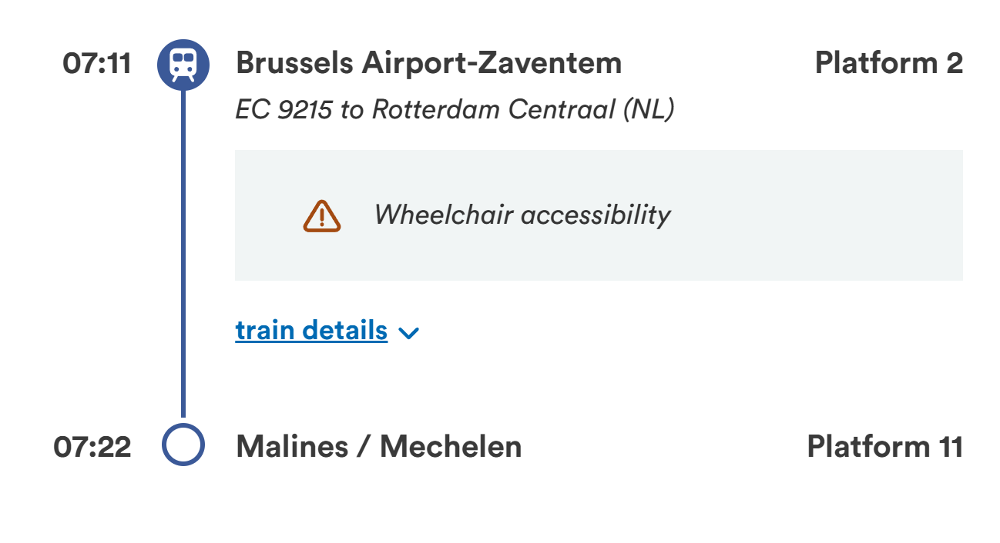
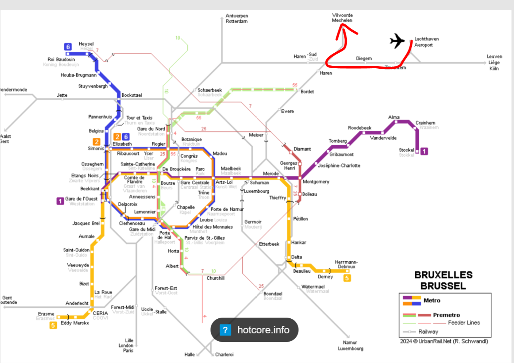
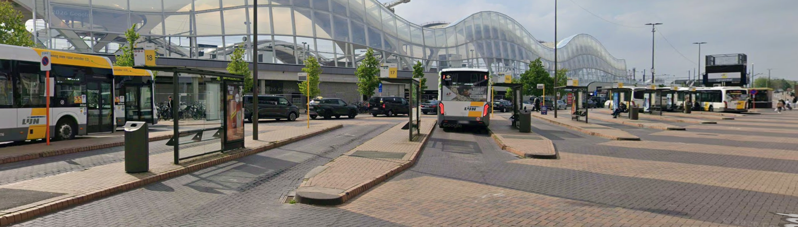
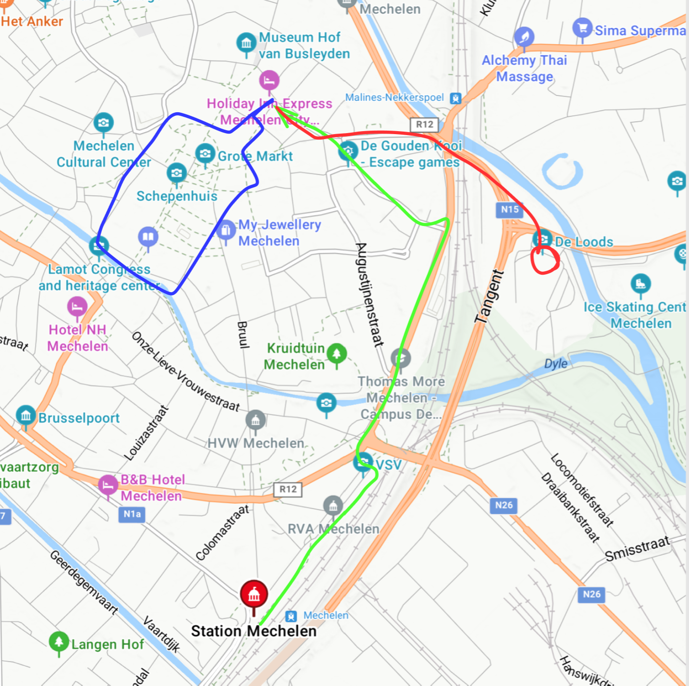

Links
- Brussels Airport map: Brussels Airport departure and connections map
- Belgian Train: Belgian Train website
- Mechelen map: Mechelen, Belgium on Google Maps
Brussels arrival brief
step by step from landing at the airport to getting to Mechelen.
Stay in the main arrivals flow until you reach the lower transit level, then keep moving toward the train connection area.

Select English on the ticket machine, then book a train toward Malines/Mechelen before you continue on toward the departure boards and the correct platform. Malines is the French word for the town, so it might be what is displayed when looking for your train as the signs scroll and show different stops or languages. You can also buy a ticket beforehand on the site below, but due to potential delays it is probably easier to book at the airport.
Look for the train from Brussels-Airport-Zaventem to Mechelen, then head toward the correct platform once you confirm the departure.

If the spelling on the board looks strange or unclear, stop and ask a train attendant before you commit to a platform or a train.

If the route starts looking stop-heavy or city-bound, re-check. Mechelen is a simple target route.

The bus pickup area is right outside, but buses can pause up to 30 mins between loops, so Uber is probably the better move after a long flight or with bags.

From the station to the Holiday Inn is about 2 miles, so it is technically walkable but not a great call with roller bags. Once you are checked in, the venue is only about 0.4 miles away on foot, and the downtown area with the old church and restaurants is easy to reach from there. Plan on roughly 1 hour 30 minutes total from landing to getting settled.

About 2 miles from the station to the Holiday Inn. It is walkable, but the stone sidewalks and luggage make it a bad option after travel.
About 0.4 miles. Short enough to walk, and I like a little walk before each day, so I suggest we hoof it.
This marks the old church, restaurants, and the more scenic downtown stretch if you want to get out after arriving.